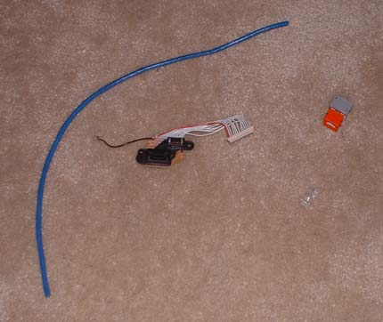
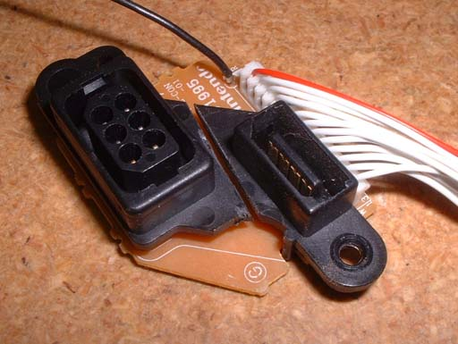
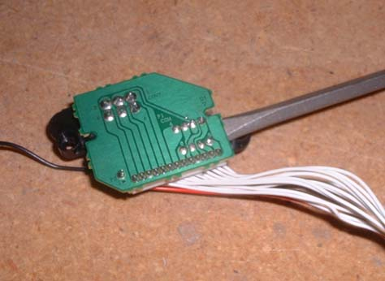
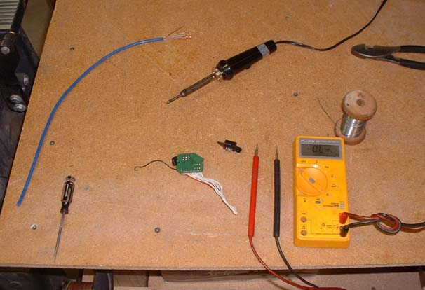
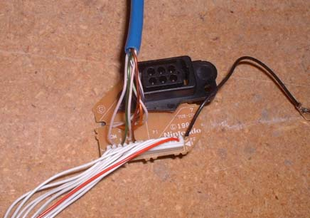
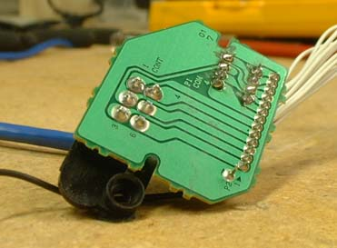
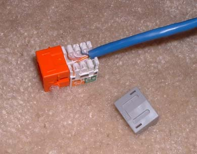
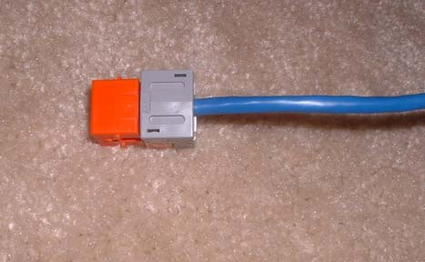
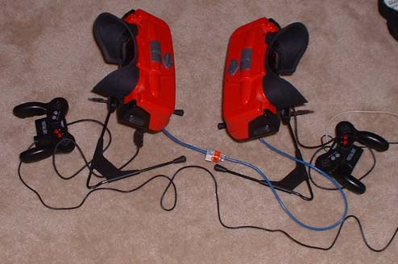
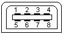

Link Cable
Setting up the Hardware:
I modified my link port by removing the proprietary connector and connecting up a standard RJ45 connector over Cat5 cable. Here's a short how-to for those interested in this mod.

The needed pieces - Cat5 wire, RJ45 connector, the controller/link board.

Then you want to separate the link from the controller port - I used a Dremel and cut down the middle - I haven't gotten a better way to do this yet, but when you cut the link connector off, you also cut off the only screw hole (the controller side is only a fitting hole, there is no screw there), so the board doesn't fit in quite as snug as it did when it was screwed in.

Then you need to get the link port off - I stuck a flathead screwdriver in between the board and the connector, then used a soldering iron and heated the pins while prying with the screwdriver

Then you need to strip back the wires, test to make sure there are no shorts in the connector, then solder the wires into the holes where the link connector was

Here's a pic of my wires soldered in the holes, I put them in standard network cable order to remember easier later (W/O,O,W/G,Bl,W/Bl,G,W/Br,Br)

Just a pic from the bottom

Putting the wires into the socket

Completed cable end

And here's 2 VB's connected!
Pinout:
Here's how the VB's should be connected for the link port to work. I have tried all the VB games that have been rumored to have link cable support, and unfortunately none of them do (at least with my pinout that I've found from homebrewn software that successfully communicates across the link port).

Looking at the socket on the VB, here's the pin #'s
COMCNT 1-------1 COMCNT
+5 2 2 +5
Clock 3-------3 Clock
Rx 4-------8 Tx
Sync In 5 6 Sync Out
Sync Out 6-------5 Sync In
GND 7-------7 GND
Tx 8-------4 Rx
Here's the pinout, I'm not 100% sure that this is how it was intended to be used, but as far as I can tell, this is how I think it should be, and it does successfully send and receive data. I'm also not 100% sure of the pin names/functions, but this is what they appear to be, so those are the names I've given them for the time being.
Programming:
Check my programs out HERE for examples on how to program for the link, and I'll write more specific details here later.
When transmitting as the master, the Virtual Boy outputs a 50KHz clock, which outputs data at 50 kbit/second - The test sent 100kbytes (800kbits) of data one byte at a time from a variable and read each byte to a variable in approximately 16 seconds, also did with no reading or writing to variables in approximately the same amount of time, and also switching from master/remote for every send/receive in approximately the same amount of time. Because of the single clock and dedicated Send and Receive pins, it always runs full duplex.
When the Virtual Boy is run as a slave and clocked by an external source, the clock can be much faster than 50KHz. I've successfully sent data with no errors at a maximum of about 285KHz. Faster than that, at least with my system and current wiring, will drop bits on occasion. The maximum speed may not be consistent across all systems though.
{kind=link}